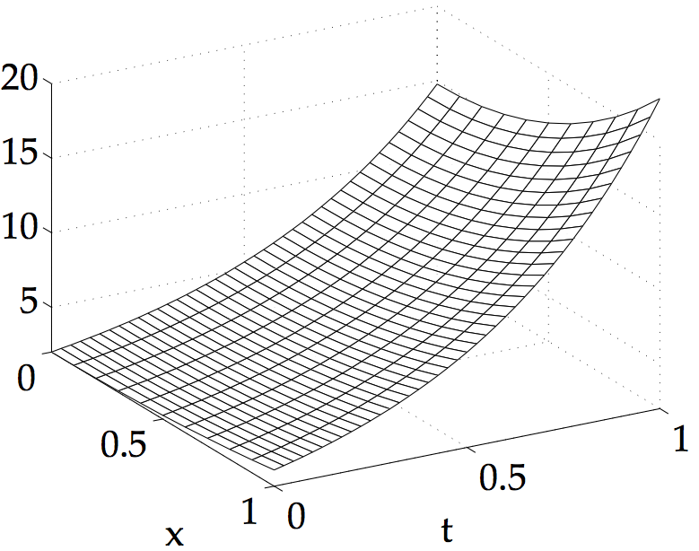
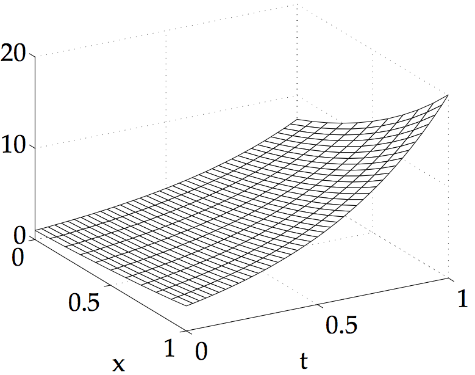

COMPUTER PROBLEMS 8.1
\(\def\ds{\displaystyle} \)
1 Program 8.1 can be used after adjusting
\(c=2\) and the initial/boundary conditions \(f(x),l(t)\) and \(r(t)\).
Theorem 8.2 requires \(k<(0.1)^2/4 = 0.0025\) for stability; if \(k> 0.003\)
is used, the solution becomes noticeably unstable.


3 Program 8.2 implements the Backward
Difference Method. The exact solution
\(u\) and the computed solutions \(w\) are:
\[\text{(a)}\ \ \ \
\begin{array}{ccc}
h&k&u(0.5,1)&w(0.5,1)&\text{error}\\
0.02 & 0.02 & 16.6642 & 16.0474 & 0.6168 \\
0.02 & 0.01 & 16.6642 & 16.3530 & 0.3112 \\
0.02 & 0.005 & 16.6642 & 16.5079 & 0.1563 \\
\end{array}\]
\[\text{(b)}\ \ \ \
\begin{array}{ccc}
h&k&u(0.5,1)&w(0.5,1)&\text{error}\\
0.02 & 0.02 & 12.1825 & 11.7316 & 0.4509 \\
0.02 & 0.01 & 12.1825 & 11.9550 & 0.2275 \\
0.02 & 0.005 & 12.1825 & 12.0683 & 0.1142 \\
\end{array}\ \ \
\]
5 Program 8.4 adjusted for the
correct initial and boundary conditions can be used. The exact solution
\(u\) and the computed solutions \(w\) are:
\[\text{(a)}\ \ \ \
\begin{array}{ccc}
h&k&u(0.5,1)&w(0.5,1)&\text{error}\\
0.02 & 0.02 & 16.664183 & 16.664504 & 0.000321 \\
0.01 & 0.01 & 16.664183 & 16.664263 & 0.000080 \\
0.005 & 0.005 & 16.664183 & 16.664203 & 0.000020 \\
\end{array}\]
\[\text{(b)}\ \ \ \
\begin{array}{ccc}
h&k&u(0.5,1)&w(0.5,1)&\text{error}\\
0.02 & 0.02 & 12.182494 & 12.182728 & 0.000235 \\
0.01 & 0.01 & 12.182494 & 12.182553 & 0.000059 \\
0.005 & 0.005 & 12.182494 & 12.182509 & 0.000015 \\
\end{array}\ \ \
\]
7 Program 8.4 can be used to generate solutions with \(D=1\) and the domain \([0,10]\). For \(C> \pi^2/100\), the population survives.